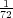

in. For example, the
TEX dimension 2bp should be inserted as 2 into a PDF file and the TEX dimension 10pt as 9.9626401. To make
this conversion easier, the following command may be useful:
in. For example, the
TEX dimension 2bp should be inserted as 2 into a PDF file and the TEX dimension 10pt as 9.9626401. To make
this conversion easier, the following command may be useful:
A “user” of the PGF system layer (like the basic layer or a frontend) will interface with the system layer by calling a stream of commands starting with \pgfsys@. From the system layer’s point of view, these commands form a long stream. Between calls to the system layer, control goes back to the user.
The driver files implement system layer commands by inserting \special commands that implement the desired operation. For example, \pgfsys@stroke will be mapped to \special{pdf: S} by the driver file for pdftex.
For many drivers, when such a stream of specials starts, it is necessary to install an appropriate transformation and perhaps perform some more bureaucratic tasks. For this reason, every stream will start with a \pgfsys@beginpicture and will end with a corresponding ending command.
Called at the beginning of a {pgfpicture}. This command should “setup things.”
Most drivers will need to implement this command.
Called at the end of a pgfpicture.
Most drivers will need to implement this command.
Called after a {pgfpicture} has been typeset. The picture will have been put in box <box>. This command should insert the box into the normal text. The box <box> will still be a “raw” box that contains only the \special’s that make up the description of the picture. The job of this command is to resize and shift <box> according to the baseline shift and the size of the box.
This command has a default implementation and need not be implemented by a driver file.
This version of the \pgfsys@beginpicture picture command can be used for pictures that are guaranteed not to contain any escaped boxes (see below). In this case, a driver might provide a more compact version of the command.
This command has a default implementation and need not be implemented by a driver file.
Called at the end of a “pure” {pgfpicture}.
This command has a default implementation and need not be implemented by a driver file.
Inside a stream it is sometimes necessary to “escape” back into normal typesetting mode; for example to insert some normal text, but with all of the current transformations and clippings being in force. For this escaping, the following command is used:
Called to insert a (horizontal) TeX box inside a {pgfpicture}.
Most drivers will need to (re-)implement this command.
Called to insert a (horizontal) TeX box inside a {pgfpicture}, but with the current coordiante transformation matrix synced with the canvas transformation matrix.
This command should do the same as if you used \pgflowlevelsynccm followed by \pgfsys@hbox. However, the default implementation of this command will use a “TeX-translation” for the translation part of the transformation matrix. This will ensure that hyperlinks “survive” at least translations. On the other hand, a driver may choose to revert to a simpler implementation. This is done, for example, for the SVG implementation, where a TEX-translation makes no sense.
This command is used to start a path at a specific point (x,y) or to move the current point of the current path to (x,y) without drawing anything upon stroking (the current path is “interrupted”).
Both <x> and <y> are given as TEX dimensions. It is the driver’s job to transform these to the coordinate system of the backend. Typically, this means converting the TEX dimension into a dimensionless multiple of in. The function \pgf@sys@bp helps with this conversion.
Example: Draw a line from (10pt,10pt) to the origin of the picture.
|
This command is protocoled, see Section 35.
Continue the current path to (x,y) with a straight line.
This command is protocoled, see Section 35.
Continue the current path to (x3,y3) with a Bézier curve that has the two control points (x1,y1) and (x2,y2).
Example: Draw a good approximation of a quarter circle:
|
This command is protocoled, see Section 35.
Append a rectangle to the current path whose lower left corner is at (x,y) and whose width and height in big points are given by <width> and <height>.
This command can be “mapped back” to \pgfsys@moveto and \pgfsys@lineto commands, but it is included since PDF has a special, quick version of this command.
This command is protocoled, see Section 35.
Close the current path. This results in joining the current point of the path with the point specified by the last \pgfsys@moveto operation. Typically, this is preferable over using \pgfsys@lineto to the last point specified by a \pgfsys@moveto, since the line starting at this point and the line ending at this point will be smoothly joined by \pgfsys@closepath.
Example: Consider
|
and
|
The difference between the above will be that in the second triangle the corner at the origin will be wrong; it will just be the overlay of two lines going in different directions, not a sharp pointed corner.
This command is protocoled, see Section 35.
Perform a concatenation of the canvas transformation matrix with the matrix given by the values <a> to <f >, see the PDF or PostScript manual for details. The values <a> to <d> are dimensionless factors, <e> and <f > are TEX dimensions
Example: \pgfsys@transformcm{1}{0}{0}{1}{1cm}{1cm}.
This command is protocoled, see Section 35.
This command will change the origin of the canvas to (x,y).
This command has a default implementation and need not be implemented by a driver file.
This command is protocoled, see Section 35.
This command will scale the canvas (and everything that is drawn) by a factor of <x scale> in the x-direction and <y scale> in the y-direction. Note that this applies to everything, including lines. So a scaled line will have a different width and may even have a different width when going along the x-axis and when going along the y-axis, if the scaling is different in these directions. Usually, you do not want this.
This command has a default implementation and need not be implemented by a driver file.
This command is protocoled, see Section 35.
Stroke the current path (as if it were drawn with a pen). A number of graphic state parameters influence this, which can be set using appropriate system commands described later.
In addition to stroking a path, the path may also be used for clipping after it has been stroked. This will happen if the \pgfsys@clipnext is used prior to this command, see there for details.
This command is protocoled, see Section 35.
This command should have the same effect as first closing the path and then stroking it.
This command has a default implementation and need not be implemented by a driver file.
This command is protocoled, see Section 35.
This command fills the area surrounded by the current path. If the path has not yet been closed, it is closed prior to filling. The path itself is not stroked. For self-intersecting paths or paths consisting of multiple parts, the nonzero winding number rule is used to determine whether a point is inside or outside the path, except if \ifpgfsys@eorule holds - in which case the even-odd rule should be used. (See the PDF or PostScript manual for details.)
The following graphic state parameters influence the filling:
In addition to filling the path, the path will also be used for clipping if \pgfsys@clipnext is used prior to this command.
This command is protocoled, see Section 35.
First, the path is filled, then the path is stroked. If the fill and stroke colors are the same (or if they are not specified and the current color is used), this yields almost the same as a \pgfsys@fill. However, due to the line thickness of the stroked path, the fill-stroked area will be slightly larger.
In addition to stroking and filling the path, the path will also be used for clipping if \pgfsys@clipnext is used prior to this command.
This command is protocoled, see Section 35.
Normally, this command should “throw away” the current path. However, after \pgfsys@clipnext has been called, the current path should subsequently be used for clipping. See \pgfsys@clipnext for details.
This command is protocoled, see Section 35.
This command should be issued after a path has been constructed, but before it has been stroked and/or filled or discarded. When the command is used, the next stroking/filling/discarding command will first be executed normally. Then, afterwards, the just-used path will be used for subsequent clipping. If there has already been a clipping region, this region is intersected with the new clipping path (the clipping cannot get bigger). The nonzero winding number rule is used to determine whether a point is inside or outside the clipping area or the even-odd rule, depending on whether \ifpgfsys@eorule holds.
Sets the width of lines, when stroked, to <width>, which must be a TEX dimension.
This command is protocoled, see Section 35.
Sets the cap to a butt cap. See \pgfsys@stroke.
This command is protocoled, see Section 35.
Sets the cap to a round cap. See \pgfsys@stroke.
This command is protocoled, see Section 35.
Sets the cap to a rectangular cap. See \pgfsys@stroke.
This command is protocoled, see Section 35.
Sets the join to a miter join. See \pgfsys@stroke.
This command is protocoled, see Section 35.
Sets the miter limit of lines to <factor>. See the PDF or PostScript for details on what the miter limit is.
This command is protocoled, see Section 35.
Sets the join to a round join. See \pgfsys@stroke.
This command is protocoled, see Section 35.
Sets the join to a bevel join. See \pgfsys@stroke.
This command is protocoled, see Section 35.
Sets the dashing patter. <pattern> should be a list of TEX dimensions lengths separated by commas. <phase> should be a single dimension.
Example: \pgfsys@setdash{3pt,3pt}{0pt}
The list of values in <pattern> is used to determine the lengths of the “on” phases of the dashing and of the “off” phases. For example, if <pattern> is 3bp,4bp, then the dashing pattern is “3bp on followed by 4bp off, followed by 3bp on, followed by 4bp off, and so on.” A pattern of .5pt,4pt,3pt,1.5pt means “.5pt on, 4pt off, 3pt on, 1.5pt off, .5pt on, ...” If the number of entries is odd, the last one is used twice, so 3pt means “3pt on, 3pt off, 3pt on, 3pt off, ...” An empty list means “always on.”
The second argument determines the “phase” of the pattern. For example, for a pattern of 3bp,4bp and a phase of 1bp, the pattern would start: “2bp on, 4bp off, 3bp on, 4bp off, 3bp on, 4bp off, ...”
This command is protocoled, see Section 35.
Determines whether the even odd rule is used for filling and clipping or not.
Sets the opacity of stroking operations.
Sets the opacity of filling operations.
The PGF system layer provides a number of system commands for setting colors. These command coexist with commands from the color and xcolor package, which perform similar functions. However, the color package does not support having two different colors for stroking and filling, which is a useful feature that is supported by PGF. For this reason, the PGF system layer offers commands for setting these colors separatedly. Also, plain TEX profits from the fact that PGF can set colors.
For PDF, implementing these color commands is easy since PDF supports different stroking and filling colors directly. For PostScript, a more complicated approach is needed in which the colors need to be stored in special PostScript variables that are set whenever a stroking or a filling operation is done.
Sets the color used for stroking and filling operations to the given red/green/blue tuple (numbers between 0 and 1).
This command is protocoled, see Section 35.
Sets the color used for stroking operations to the given red/green/blue tuple (numbers between 0 and 1).
Example: Make stroked text dark red: \pgfsys@color@rgb@stroke{0.5}{0}{0}
The special stroking color is only used if the stroking color has been set since the last \color or \pgfsys@color@xxx command. Thus, each \color command will reset both the stroking and filling colors by calling \pgfsys@color@reset.
This command is protocoled, see Section 35.
Sets the color used for filling operations to the given red/green/blue tuple (numbers between 0 and 1). This color may be different from the stroking color.
This command is protocoled, see Section 35.
Sets the color used for stroking and filling operations to the given cymk tuple (numbers between 0 and 1).
This command is protocoled, see Section 35.
Sets the color used for stroking operations to the given cymk tuple (numbers between 0 and 1).
This command is protocoled, see Section 35.
Sets the color used for filling operations to the given cymk tuple (numbers between 0 and 1).
This command is protocoled, see Section 35.
Sets the color used for stroking and filling operations to the given cym tuple (numbers between 0 and 1).
This command is protocoled, see Section 35.
Sets the color used for stroking operations to the given cym tuple (numbers between 0 and 1).
This command is protocoled, see Section 35.
Sets the color used for filling operations to the given cym tuple (numbers between 0 and 1).
This command is protocoled, see Section 35.
Sets the color used for stroking and filling operations to the given black value, where 0 means black and 1 means white.
This command is protocoled, see Section 35.
Sets the color used for stroking operations to the given black value, where 0 means black and 1 means white.
This command is protocoled, see Section 35.
Sets the color used for filling operations to the given black value, where 0 means black and 1 means white.
This command is protocoled, see Section 35.
This command will be called when the \color command is used. It should purge any internal settings of stroking and filling color. After this call, till the next use of a command like \pgfsys@color@rgb@fill, the current color installed by the \color command should be used.
If the TEX-if \pgfsys@color@reset@inorder is set to true, this command may “assume” that any call to a color command that sets the fill or stroke color came “before” the call to this command and may try to optimize the output accordingly.
An example of an incorrect “out of order” call would be using \pgfsys@color@reset at the beginning of a box that is constructed using \setbox. Then, when the box is constructed, no special fill or stroke color might be in force. However, when the box is later on inserted at some point, a special fill color might already have been set. In this case, this command is not guaranteed to reset the color correctly.
Sets the optimized “in order” version of the color resetting. This is the default.
Switches off the optimized color resetting.
This slightly obscure command causes the color stack to be tricked. When called, this command should set the current color to <LATEX color> without causing any change in the color stack.
Example: \pgfsys@color@unstacked{red}
The scoping commands are used to keep changes of the graphics state local.
Saves the current graphic state on a graphic state stack. All changes to the graphic state parameters mentioned for \pgfsys@stroke and \pgfsys@fill will be local to the current graphic state and the old values will be restored after \pgfsys@endscope is used.
Warning: PDF and PostScript differ with respect to the question of whether the current path is part of the graphic state or not. For this reason, you should never use this command unless the path is currently empty. For example, it might be a good idea to use \pgfsys@discardpath prior to calling this command.
This command is protocoled, see Section 35.
Restores the last saved graphic state.
This command is protocoled, see Section 35.
The system layer provides some commands for image inclusion.
This macro should expand to a list of suffixes, separated by ‘:’, that will be tried when searching for an image.
Example: \def\pgfsys@imagesuffixlist{eps:epsi:ps}
Called, when an image should be defined.
This command does not take any parameters. Instead, certain macros will be preinstalled with appropriate values when this command is invoked. These are:
If this macro and also the height macro are empty, the image should have its “natural” size.
If exactly only of them is specified, the undefined value the image is scaled so that the aspect ratio is kept.
If both are set, the image is scaled in both directions independently, possibly changing the aspect ratio.
The following macros presumable mostly make sense for drivers that can handle PDF:
The command should now setup the macro \pgf@image such that calling this macro will result in typesetting the image. Thus, \pgf@image is the “return value” of the command.
This command has a default implementation and need not be implemented by a driver file.
This command declares a mask for usage with images. It works similar to \pgfsys@defineimage: Certain macros are set when the command is called. The result should be to set the macro \pgf@mask to a pdf object count that can subsequently be used as a soft mask. The following macros will be set when this command is invoked:
Declares a horizontal shading for later use. The effect of this command should be the definition of a macro called \@pgfshading<name>! (or \csname @pdfshading<name>!\endcsname, to be precise). When invoked, this new macro should insert a shading at the current position.
<name> is the name of the shading, which is also used in the output macro name. <height> is the height of the shading and must be given as a TeX dimension like 2cm or 10pt. <specification> is a shading color specification as specified in Section 28. The shading specification implicitly fixes the width of the shading.
When \@pgfshading<name>! is invoked, it should insert a box of height <height> and the width implicit in the shading declaration.
Like the horizontal version, only for vertical shadings. This time, the height of the shading is implicit in <specification> and the width is given as <width>.
Declares a radial shading. Like the previous macros, this command should setup the macro \@pgfshading<name>!, which upon invocation should insert a radial shading whose size is implicit in <specification>.
The parameter <starting point> is a PGF point specifying the inner starting point of the shading.
This command gets protocoled literals and should insert them into the .pdf or .dvi file using an appropriate \special.
Declares an object for later use. The idea is that the object can be precached in some way and then be rendered more quickly when used several times. For example, an arrow head might be defined and prerendered in this way.
The parameter <name> is the name for later use. <lower left> and <upper right> are PGF points specifying a bounding box for the object. <code> is the code for the object. The code should not be too fancy.
This command has a default implementation and need not be implemented by a driver file.
Renders a previously declared object. The first parameter is the name of the the object. The second parameter is extra code that should be executed right before the object is rendered. Typically, this will be some transformation code.
This command has a default implementation and need not be implemented by a driver file.
All drawing or stroking or text rendering between calls of the following commands should be suppressed. A similar effect can be achieved by clipping against an empty region, but the following commands do not open a graphics scope and can be opened and closed “orthogonally” to other scopes.
Between this command and the closing \pgfsys@endinvisible all output should be suppressed. Nothing should be drawn at all, which includes all paths, images and shadings. However, no groups (neither TEX groups nor graphic state groups) should be opened by this command.
This command has a default implementation and need not be implemented by a driver file.
This command is protocoled, see Section 35.
Ends the invisibility section, unless invisibility blocks have been nested. In this case, only the “last” one restores visibility.
This command has a default implementation and need not be implemented by a driver file.
This command is protocoled, see Section 35.
The system commands take TEX dimensions as input, but the dimensions that have to be inserted into PDF and
PostScript files need to be dimensionless values that are interpreted as multiples of in. For example, the
TEX dimension 2bp should be inserted as 2 into a PDF file and the TEX dimension 10pt as 9.9626401. To make
this conversion easier, the following command may be useful:
Inserts how many multiples of in the <dimension> is into the current protocol stream (buffered).
Example: \pgf@sys@bp{\pgf@x} or \pgf@sys@bp{1cm}.
Note that this command is not a system command that can/needs to be overwritten by a driver.